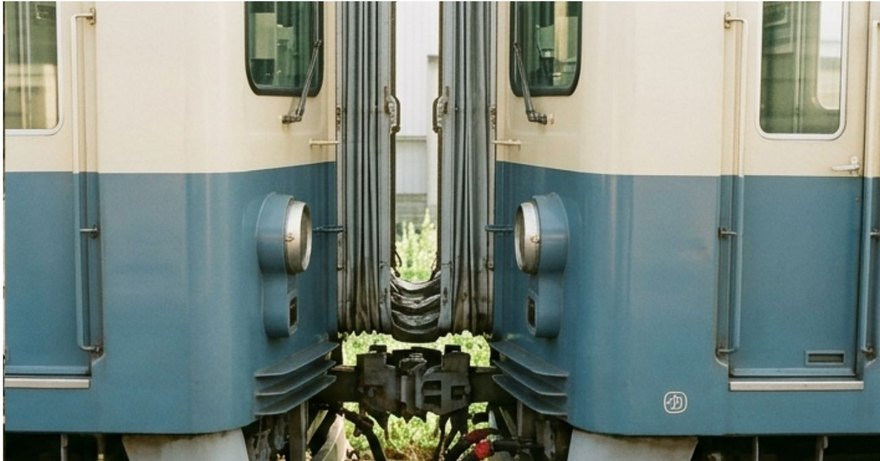

当局の車両は、2両を1編成として連結して運行しています。連結には密着連結器方式を 採用しており、走行中の揺れや衝撃を吸収しながら、編成全体を一体として支える 構造になっています。連結・解放の作業は、出庫・入庫の際に車両整備課の職員が 手作業で確認しながら行っています。
連結部は、車両の中では目立たない部分です。しかし、この目立たない接合部が あるからこそ、編成全体が一つのものとして走ることができます。当局では、 連結という技術を、車両同士をつなぐだけのものではなく、人と人、まちの過去と 今をつなぐものとしても、大切に考えています。
| 連結方式 | 密着連結器方式 |
|---|---|
| 編成両数 | 2両編成 |
| 連結部点検 | 出庫時・入庫時に毎回点検 |
| 定期点検周期 | 年1回(車両整備課による分解点検) |
車両整備課の取り組み
車両整備課では、連結器をはじめとする部品について、新しい機器への交換よりも、 点検・調整を重ねて長く使うことを基本としています。使い慣れた部品には、 新品にはない安定感があるという考え方によるものです。
連結は、目立たないところで全体を支えています。ピコぬ市交通局では、この考え方を
車両だけでなく、駅や街づくり全体の姿勢としても大切にしています。